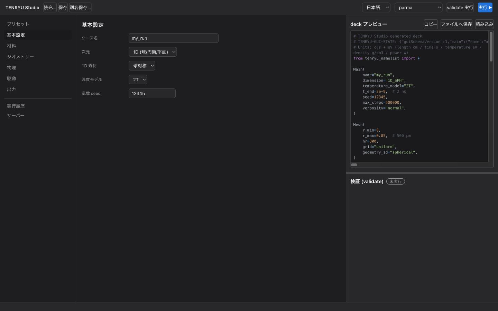

TENRYU Studio (GUI) reference
TENRYU Studio は、TENRYU の入力であるデッキ（deck）、すなわち Python の namelist 形式のファイルを、フォームから作成する macOS のデスクトップアプリである。入力に応じてデッキをその場で生成し、検証（validate）、保存、SSH で接続した計算サーバーでの実行までを、ひとつの画面で扱える。保存したデッキにはフォームの状態も埋め込まれるため、コードと GUI のあいだを行き来しながら設定を育てられる。Studio に固有の用語は用語の節で説明する。
GUI マニュアルは gui/manual/ に同梱される別の文書一式で、本サイトにも含まれている。上のボタン（およびトップバーの「GUI マニュアル」リンク）から開ける。
入手と起動
Studio はリポジトリの gui/ ディレクトリに含まれる（単体配布はしていない）。Studio の中核部分は純粋な Web アプリであり、Mac ネイティブアプリでは Tauri 2 のシェルがこれを包んで、システムの ssh と scp を起動する。アプリのビルドは Mac で行い、Node.js と Rust のツールチェーンが要る。gui/ で次を実行する。
npm ci
npm run tauri buildアプリは gui/src-tauri/target/release/bundle/macos/TENRYU Studio.app にできる。このアプリは Apple の署名と公証（notarization）を受けていない。ほかの人がビルドしたアプリを初めて起動して macOS に拒否されたときは、Finder でアプリを右クリックして「開く」を選ぶ。
開発用の起動は、gui/ で npm install を済ませたうえで、npm run bridge と npm run dev（Vite 開発サーバー、http://localhost:5173）を並走させてブラウザから開く。npm run bridge は、Tauri シェルの代わりに ssh と scp を起動する開発用のブリッジ（gui/dev-bridge/server.mjs）で、127.0.0.1 のポート 5175 だけで待ち受ける。手順の詳細はリポジトリの gui/README.md を参照のこと。
フォームから実行まで
Studio の左のナビゲーションは、プリセット、基本設定、材料、ジオメトリー、物理、駆動、出力を、設定する順に並べている。区切り線の下には、実行履歴、サーバー、アシスタントの画面が並ぶ。「ジオメトリー」のタブは、メッシュと初期領域の両方を編集する（定義）。中央で選択中のフォームを編集すると、フォームの画面では右のペインに最新のデッキが表示される。必須の値が欠けていたり、整合しない組合せがあったりする場合は、その場でエラーを示し、修正すると生成を再開する。右のペインのデッキを見れば、長さは cm、時間は s、温度は eV、密度は g/cm³ という TENRYU の cgs + eV の規約を確認しながら入力できる。

基本の流れは「フォームを作る → 生成されたデッキを読む → 検証する → 保存または実行」である。プリセットは出発点であり、適用したあとの項目はすべて編集できる。右のペインで生成内容を確認し、検証結果のエラーを解消してからファイルへ保存すること。保存したデッキは通常の Python のファイルなので、Studio を介さずに ./build/tenryu run deck.py で実行することも、テキストエディタで内容を確認することもできる。
Studio で使う用語
Studio の画面と、Studio が保存するデッキには、Studio だけで使う語がある。ここに挙げる語は、Studio の実装（gui/）と、同梱のアシスタント（tools/assist/）での意味で使うので、まとめて定義する。画面の文言は、日本語の表示を「」で引用する。物理の語である低温平衡（cold equilibrium）と、2 プラズモン崩壊（two-plasmon decay、TPD）のしきい値の指標は、プリセットの節で説明する。
プリセットと検証の run
プリセット（preset）は、フォームのすべての値をまとめて設定するひな形である。「プリセット」の画面にカードとして並び、1D のタブに 12 個（基本が 6 個、オプションのカーネルが 6 個）、2D のタブに 5 個ある。カードの「このプリセットを適用」を押すと確認が出て、「破棄して適用」を押すと、現在のフォームの内容がすべて破棄されて置き換わり、画面は「基本設定」へ移る。1D のカードは、題、バッジ、説明、「使うカーネル」、「検証の run」を表示する。バッジは 3 種で、メッシュの作り方、必要な物性表（material table）、計算の重さを表し、該当するものだけが付く。表示は、「推薦メッシュ」または「層ごとの指定」、「物性表が必要: …」、「計算が重い (GPU 1 枚で数時間)」である。プリセットは、フォームを一から埋めずに、目的に近い設定から始めるために使う。
検証の run（verification run）は、プリセットのカードにある結果の欄「検証の run」である。プリセットのデッキを終了時刻まで計算し、同じ条件を 2 倍細かいメッシュで計算した結果と比べた量の差を書く。2 倍細かいメッシュは、全セルの質量を半分にしたデッキのメッシュである。比べる量はプリセットごとに違い（吸収エネルギー、アブレーション圧（ablation pressure）、アブレーションした質量、停滞（stagnation）の時刻、最大密度など）、差が小さいほど、そのメッシュで量が収束している。空白のカードと 2D のカードには付かない。Studio の「収束確認用の組」は、フォームのデッキから、セル数を 2 倍にして全セルの質量を半分にした「細かい組」のデッキ（ケース名の末尾に _fine）を作り、同じ確かめを自分のデッキで行えるようにする。
ジオメトリーとメッシュの作り方
ジオメトリー（Geometry）は、左のナビゲーションのタブの名前である。このタブは、namelist の Mesh ブロックのメッシュ（r_min、r_max、メッシュの作り方、セル数）と、Geometry ブロックの初期条件（材料の領域ごとの外径、密度、電子温度、イオン温度）の両方を編集する。1D では、最後の領域の外側を真空にするスイッチと、コロナ層（ramp）の設定もここにある。1D の幾何（球対称、円筒、平面。Mesh.geometry_1d）は、このタブではなく「基本設定」で選ぶ。タブの名前は Geometry ブロックと同じだが、ブロックより広い範囲を扱う。
メッシュの作り方（mesh method）は、1D のときにこのタブで選ぶ 6 つの方法で、選んだ方法でデッキに書かれるものが変わる。「一様」は、nr 個の等幅のセルを並べる（grid="uniform"）。「graded（区間と質量の重み）」は、区間ごとのセル数と、区間の端を細かくする重みで並べる。「推薦メッシュ（レーザー条件から自動）」は zoning_intent と resolution_requirement を書く。「層ごとの指定」と「節点座標の取り込み」は、節点の座標を explicit_nodes に書く。「宣言型の指定（zoning_intent）」は、zoning_intent をそのまま編集する。
推薦メッシュと層ごとの指定
推薦メッシュ（recommended mesh）は、レーザー照射の 1D のデッキについて、メッシュ推薦ツールが作り、サーバーのソルバーで検証したメッシュである。ツールは tools/assist/assist.py recommend-mesh で、Claude Code のスキル tenryu-mesh-1d が使うものと同じである。Studio は、「推薦メッシュを作る (サーバー)」を押すと、選んだサーバーでこのツールを実行し、結果をフォームに入れる。
ツールは、まずフォームから、標的の層（半径、密度、材料）、レーザーの波長と波形、終了時刻、温度モデル、輻射と熱伝導の設定を読み、サーバーの tenryu validate --mesh-preview に読ませて、ソルバーが標的をどう見るかを得る。次に、メッシュの収束を測った計算の結果（同梱の参照表 tools/assist/data/mesh_convergence_reference.json）から、表面のセルの面密度（areal density）の上限を決める。その上限を満たす zoning_intent（セル数と、セルの測度（measure）を等分配する宣言）と、上限をソルバーに課す resolution_requirement（apply="enforce" と、推薦の根拠にした経験的上限 empirical）を組み、サーバーの tenryu で検証してから返す。検証を通らなかった推薦は、フォームに入れない。
推薦メッシュが要る理由は、レーザー照射の計算では、表面のセルの大きさが吸収とアブレーションの結果を左右するからである。ソルバーは、アブレーションの規則と衝撃波（shock wave）の規則から、セルの大きさの上限を分解能要求（resolution requirement）として計算する。参照表は、表面のセルの面密度を 2 倍ずつ細かくした 9 段階の計算（\(3.2\times10^{-5}\) g/cm² から \(1.25\times10^{-7}\) g/cm² まで）について、最も細かい計算との差が、吸収エネルギー 3 %、アブレーション圧 5 %、アブレーションした質量 10 %、ブレークアウト（shock breakout）の時刻 2 % の許容に収まる最も粗い面密度を、条件ごとに記録したものである。推薦は、この表の範囲にある条件に対して作る。範囲の外では、較正した先験的（a priori）な上限を使って「extrapolation」の印を付ける。印が付いたときは、表面のセルの質量を半分にした組で収束を確かめること。
推薦メッシュは、レーザー照射の 1D のデッキにだけ作れる（分解能要求がレーザーの条件から決まるため）。推薦ツールは表面がそのままの標的を前提にするので、物質のコロナ層（ramp）とは併用できず、レーザーのゴーストコロナ（ghost corona。Studio の表示は「合成コロナ」。1D メッシュ）を使う。作ったあとに標的、駆動、物理の条件を変えると、Studio は条件が変わったことを表示するので、作り直す。サーバーには、tenryu のバイナリの上の階層に TENRYU のチェックアウト（tools/assist）と、python3（3.9 以上）が要る。
層ごとの指定（per-layer table）は、層（材料の領域、コロナ層、外側の真空）ごとにセル数と並べ方を決めるメッシュの作り方である。並べ方は「等幅」「等質量」「等比」の 3 つである。等比のときは、隣のセルとの幅の比、端のセルの幅、隣の層の端のセルと質量をそろえる指定のいずれかで比を決め、細かくする側（外側、内側、両端）を選ぶ。Studio が節点を計算して explicit_nodes としてデッキに書くので、画面に表示する格子がそのまま計算に使われる。新しい層の既定は、40 セル、等質量、幅の比 1.1、端のセルの幅 \(10^{-5}\) cm（0.1 µm）、細かくする側は外側である。どの駆動（レーザー、輻射温度、圧力）にも使える。プリセットのうち、レーザー照射の 6 個は、その条件で作った推薦メッシュを保存しており、輻射温度か圧力で駆動する 5 個は、この層ごとの指定を使う。
検証
Studio の「検証」は、次の 2 つの意味で使う。
フォームの検証（form validation）は、Studio がフォームの入力を、入力のたびにその場で検査することである。必須の値の欠落や整合しない組合せがあると、右のペインのデッキの代わりにエラーの一覧を表示し、デッキの生成と実行を止める。サーバーを必要としない。
サーバーでの検証（server validation）は、ヘッダーの「validate 実行」で行う。Studio は、生成したデッキを、選んだサーバーの実行ディレクトリの validate_scratch/<ケース名>.py に置き、そのサーバーのバイナリで tenryu validate を実行する。tenryu validate は、デッキを読んで namelist の検査（未知のキー、型、範囲、組合せ）を行い、時間と位置の関数が代表の点（時刻 0 と領域の中点）で有限の値を返すかを確かめ、返さないときは警告を出す。1D のレーザーのデッキでは、分解能要求を判定し、apply="enforce" で満たさなければ失敗とする。時間発展は計算しない。結果は、右下の「検証 (validate)」のパネルに、「検証 PASS」または「検証 FAIL」のバッジ、要約、エラー、警告、生ログとして表示する。タイムアウトは 120 秒である。ヘッダーの「validate 実行」は、サーバーと tenryu のバイナリのパスを設定してから使える。
プリセットの「検証の run」（プリセットの項）は、これらとは別の、計算の結果の比較である。サイトの検証とベンチマークの頁の検証は、ソルバー自体の試験を指し、Studio の機能とは別である。
TENRYU-GUI-STATE、読込、取込
TENRYU-GUI-STATE は、Studio が保存するデッキの冒頭近くに置く、# TENRYU-GUI-STATE: {…} の 1 行のコメントである。{…} はフォーム全体の状態を JSON にしたもので、スキーマの版 guiSchemaVersion（現在 1）を含む。Python のコメントなので、ソルバーは読み飛ばす。Studio がデッキを開くとき、この行があれば、Python を実行せずに、フォームをここから復元する。古い版が書いた JSON に無い欄は、現在の既定値で補う。JSON が壊れているか、スキーマの版が違うと、読込はエラーになる。
読込（load）は、デッキのファイルを開く、または Python のテキストを貼り付ける操作である。ヘッダーの「読込…」、メニューの「namelist を読込…」（⌘O）、deck プレビューの「読み込み」がこれに当たる。デッキに TENRYU-GUI-STATE があれば、上のとおり復元し、無ければ取込になる。
取込（import）は、TENRYU-GUI-STATE の無いデッキ（手で書いたデッキや、他の道具が作ったデッキ）を読込んだときの処理である。Studio は、デッキの Python を評価（evaluation）する。評価は、tenryu_namelist の代わりに記録用のモジュールを差し込んでデッキを実行し、各ブロックの呼び出し（Main、Mesh、Materials など）の引数を記録する処理である。記録した値をフォームの欄へ対応付け、フォームから作り直したデッキを評価して元のデッキと比べ、結果を取込レポートにまとめる。取込は、既存のデッキをフォームで編集しながら、フォームが表せない設定を失わないために行う。取込を終えたデッキは、保存すると TENRYU-GUI-STATE を持ち、以後は読込でそのまま復元できる。
取込レポートと標本点
取込レポート（import report）は、取込のあとに自動で開く画面（deck プレビューの「deck 取込レポート」でも開ける）で、評価したデッキの各キーを、次の 4 つの区分に分けて示す。各区分の見出しに件数を付け、各行は、キーのパス（たとえば Laser.beams.0.power）と、その区分に入れた理由である。区分の英語の表示は、Mapped to form、Recovered functions (sampling verified)、Preserved from source、Omitted GUI defaults である。末尾の「非対応で保持できなかった設定」は、現在の実装では常に「なし」と表示する。フォームで表せない設定は、捨てずに「元の Python のまま保持」に入る。
「フォームへ対応付け」は、元のデッキの値（数、文字列、真偽値）を、フォームの欄が保持し、フォームから作り直したデッキが同じ値で再現するキーである。浮動小数点数（floating-point number）は、相対 \(10^{-12}\) 以内で一致すれば同じ値とみなす。このキーの値は、取込の時点でフォームに固定され、フォームを編集すると変わる。
「関数を復元（標本点で検証済み）」は、元のデッキで Python の関数として書かれた値（レーザーの出力の波形、初期の密度と温度の分布、輻射温度や圧力の駆動の波形など）のうち、フォームが表せる形（定数、ガウス型、矩形パルス、折れ線の表。初期の分布は、領域ごとに一定の値の並び）で復元でき、復元した関数が標本点のすべてで元の関数と一致したものである。連続に変わる初期の分布は、この形で表せないので、「元の Python のまま保持」に入る。
「元の Python のまま保持」は、フォームが同じ値を再現できないキーである。値や関数が一致しない場合、フォームがそのキーを書かない場合（ソルバーの既定と同じ値を元のデッキが明示した場合など）、ブロックを複数回呼んでいる場合が当たる。保存するデッキは、初期化のときに元の Python を再実行して、これらの値を取り直す（deck_import_runtime.py）。フォームの編集がこれらと衝突すると、デッキの生成はエラーになる。ただし、フォームが書かないキーに結び付く欄を編集すると、その値が元の値を置き換える。標本点で比べられなかった関数は、警告の色の別の欄に挙げる。
「追加しない GUI 既定値」は、元のデッキに無いキーで、フォームの既定値なら書かれてしまうものである。Studio はこれを足さないので、そのキーにはソルバーの既定が働く。取込のあとで、対応する欄を含む節を編集すると、省略されていた GUI の既定値が加わることがある。
標本点（sample point）は、元の関数と、フォームから作り直した関数の値を比べる、引数の点である。時間の関数（レーザーの出力、輻射温度、境界の圧力など）では、0 から終了時刻 t_end までの等間隔の 4097 点と、関数の中の定数から見つけた折れ点（knot）とその前後の浮動小数点数である。位置の関数（初期の密度と温度の分布など）では、領域を等間隔に分けた 2049 点と、メッシュの節点、セル中心、セルの重心、領域の境界である。ソルバーが自動で作るメッシュの節点（zoning_intent と auto_regions）は含まない。許容は、2 つの値の大きいほうの絶対値の \(10^{-12}\) 倍である。有限個の点での一致は、同じ関数であることの証明ではない。「関数を復元（標本点で検証済み）」は、標本点で一致したことだけを表す。
サーバープロファイルと実行先
サーバープロファイル（server profile）は、Studio が TENRYU を検証・実行する計算機の登録情報である。「サーバー」の画面で作り、ヘッダーの選択欄で現在のものを選ぶ。項目は、表示名、接続方式、ホスト（~/.ssh/config の別名でもよい）、ユーザー、ポート、秘密鍵のファイル、一時ホスト（クラウドの pod 向けにホスト鍵の検証を無効にする）、TENRYU のバイナリの絶対パス、実行ディレクトリ（既定は ~/tenryu_gui_runs）である。接続方式には「ssh」と「ローカル (開発用)」があり、アプリで使えるのは ssh だけである。ローカルは、開発用のブリッジ経由のブラウザ版でだけ動く。Studio は認証情報を保存せず、システムの ssh と ssh-agent に任せる。接続は BatchMode（対話の入力を求めない）で行うので、パスワードなしで入れる鍵認証（public-key authentication）と、ホスト鍵（host key）の known_hosts への事前登録（一時ホストを除く）が要る。プロファイル、実行履歴、言語の設定は、Mac の ~/Library/Application Support/jp.osaka-u.ile.tenryu-studio/tenryu-studio.json に保存し、デッキにもサーバーにも入らない。プロファイルを選ばないと、「validate 実行」と「実行 ▶」は使えない。
実行先（venue）は、取込でデッキの Python を評価する場所である。ローカルの python3 か、選択中のサーバーを選ぶ（画面の「取込の実行先」）。サーバーを選ぶと、評価に使うスクリプトとデッキを、プロファイルの実行ディレクトリの下の一時ディレクトリへ送り、そこで評価して、終わると削除する。既定は、サーバーを選んでいればそのサーバー、選んでいなければローカルである。作業ディレクトリ（working directory）と環境変数（environment variable）は、実行先の側のディレクトリと環境を指す。
実行履歴
実行履歴（run history）は、左のナビゲーションの「実行履歴」の画面に並ぶ、Studio から投入した計算（run）の一覧である。「実行 ▶」を押すと、選んだサーバーの実行ディレクトリの下に <ケース名>_<UTC の日時 14 桁> のディレクトリを作り、デッキ deck.py、状態のファイル status.json、ログ run.log を置いて、tenryu run を切り離したプロセスで起動する。デッキの出力ディレクトリの既定は outputs/<ケース名> で、この run のディレクトリの下にできる。Studio は status.json を 3 秒ごとに読み、各 run のカードに、状態、進み具合（時刻と終了時刻、step、1 秒あたりの step 数、経過時間）を表示する。状態は、起動中（投入の途中）、実行中、停止中（停止を要求して終了を待つ間）、完了、失敗、停止（要求した停止で終わった）、不明（その run のサーバープロファイルが削除されている）の 7 つである。終わった run のカードには、「続きから計算…」、「記録を削除」、「結果 (history)」がある。どの run のカードにも「Scope で開く」があり、別のアプリである TENRYU Scope（run と HDF5 の閲覧用）に run を渡す。実行履歴は、最新の 50 件をアプリ設定に保存する。
実行履歴のカードの「結果 (history)」は、run のディレクトリの下の履歴ファイル outputs/*/results/*_history.h5（履歴のチャネル）を読み、エネルギー台帳（energy ledger）の各項（Studio の表示は「エネルギー収支 [erg]」）、保存誤差 |conservation_error|、時間刻み dt のグラフと、プロファイルのスナップショットを表示する。続きから計算した run では、続きの履歴ファイルをつないで表示する。「実行履歴」は Studio の run の一覧であり、「履歴」は計算が書くこのファイルを指す。
アシスタントとアシスタント用の写し
アシスタント（assistant）は、左のナビゲーションの「アシスタント」の画面（実験的機能）で、リポジトリの tools/assist（アプリに同梱）を操作する機能である。3 つの働きがある。質問応答は、TENRYU の使い方、namelist のキー、物理と数値法、出力、ソースの挙動の質問に、文書とソースを根拠に答え、回答の末尾の根拠（path:line）の実在を自動で検査する。デッキ生成は、仕様を自然言語で書くと、LLM（large language model、大規模言語モデル）が 1D のデッキを作り、サーバーでの検証と lint の指摘を返して直す反復（反復の上限は 1〜10 回で設定する）である。診断は、lint、実行結果のダイジェスト（digest）、ゾーニングの診断（zoning report）で、LLM を使わずに決定論的に動く。質問応答とデッキ生成は既定で無効で、assistant.toml の enabled = true と、使うコマンドライン（command-line interface、CLI）のツール（Claude Code または Codex CLI）の設定が要る。環境変数 TENRYU_ASSIST_DISABLE=1 は、常に優先して無効にする。
アシスタント用の写し（mirror）は、サーバーの TENRYU のチェックアウトの一部を、Mac のアプリの設定フォルダ（…/jp.osaka-u.ile.tenryu-studio/mirror/<プロファイルの id>/）に複製したものである。Studio の日本語の画面は、このフォルダーを「同期先」、写しそのものを「鏡像」と呼ぶ。複製する範囲は、docs の文書（docs/site、docs/sections、SPECIFICATION、NUMERICS、ARCHITECTURE、社内の検証記録、OUTPUT_SCHEMA、POSTPROCESSING、TUTORIAL_ja）、examples、tools/mesh_planner.py、src で、tar を ssh 越しに流して取り込み、アプリに同梱した tools/assist を加える。「サーバーから同期」を押すか、まだ同期していないときの最初の質問またはデッキ生成で、自動的に作る。アシスタントは文書とソースをローカルで読むので、Mac に TENRYU のチェックアウトを置かずに済む。取込でも、ローカルの実行先で tools.mesh_planner を使うデッキの評価に TENRYU のリポジトリが要るとき、この写しか、アシスタントの設定で指定したローカルのチェックアウトを使う。
TENRYU-GUI-STATE による行き来しながらの編集
Studio が保存するデッキの冒頭近くには、フォームの完全な状態を表す TENRYU-GUI-STATE のコメントが埋め込まれる。「読込…」でそのデッキを開くと、材料、領域、物理、駆動の波形、出力の設定などが元のフォームへ復元され、デッキの生成が再開される。したがって、配布や保管の単位は実行できるデッキそのものであり、別の GUI 用プロジェクトファイルを同期する必要はない。
保存後に手で編集した Python を取り込むには、TENRYU-GUI-STATE のコメントを削除する。コメントが残っている場合は、コメントに保存したフォームの状態を優先する。貼付け（deck プレビューの「読み込み」）では、Python を評価する前に、作業ディレクトリ、環境変数（1 行に KEY=VALUE）、評価の実行先（ローカルの python3 または選択中のサーバー）を指定する画面が開く。ファイルを開く操作（ヘッダーの「読込…」、メニューの「namelist を読込…」、⌘O）では、先に記憶した設定か既定の設定で評価を試み、失敗したときにこの画面を開く。既定の実行先は、サーバーを選んでいればそのサーバー、選んでいなければローカルの python3 である。
作業ディレクトリには、そのデッキを実行するディレクトリを指定する。「参照…」でサーバー上のディレクトリを移動し、「このフォルダーを選択」で設定する。サーバーでの既定は一時的な転送先であり、既定のまま評価に失敗すると、実行するディレクトリを選ぶよう案内を表示する。作業ディレクトリを空欄のままファイルを読み込むと、Studio は候補のディレクトリを順に試し、最初に評価に成功したものを採用する。候補は、ローカルではデッキのあるディレクトリと上位 3 階層、サーバーではサーバー上のホームの下（深さ 8 まで）で見つけた同名のデッキのディレクトリと上位 3 階層で、合計で最大 8 か所である。ファイルを開く操作では、設定画面を表示する前にこの試行を行い、失敗すると試したディレクトリを表示する。
Studio は、デッキが文字列で名前を指定して読む環境変数を検出して一覧に示し、ソースが変わったときも、欠けている NAME= の行を追加する。値が空の行は送らないため、実行先から継承した環境変数やデッキの既定値がそのまま使われる。取込に使った設定はセッション中も保持され、取込レポートと保存したデッキのヘッダに記録される。ファイルの取込に成功すると、実行先・作業ディレクトリ・環境変数の欄を、ファイルのパスごとに直近の 50 件までアプリ設定へ保存し、次に同じファイルを取り込むときは実行先の既定より優先して復元する。環境変数の値は、ヘッダとアプリ設定に平文（plain text）で保存される。
取込では、ソースとその中の関数を子プロセス（child process）で評価する。子プロセスは記録、検証、比較の 3 回起動し、各回 45 秒でタイムアウトする。サーバーでは、アプリに同梱した取込用のスクリプト、要求の JSON、デッキを、プロファイルの実行ディレクトリの下の一時ディレクトリへ転送し、終了後に削除する。デッキが依存するファイルは、そのサーバーに置いておく必要がある。信頼できるコードだけを取り込むこと。
取込レポートは、フォームへ対応付けた値、標本点で検証した関数、元の Python のまま保持する設定、追加しない既定値を示す。フォームの値は取込の時点で固定され、元の Python のまま保持する設定は、ソルバーを実行するときの作業ディレクトリと環境変数に従う。保存したデッキに埋め込まれ、初期化時に元の Python を再実行するヘルパー（deck_import_runtime.py）は作業ディレクトリも環境変数も変えず、取込時に指定した環境変数もソルバーの実行には適用されない。元の Python のまま保持する設定と衝突するフォームの編集はエラーになる。通常のローカルのデッキはサーバーも写しも必要としないが、tools.mesh_planner を import するデッキと、TENRYU_REPO を参照するデッキは、TENRYU のリポジトリを必要とする場合がある。ローカルでは TENRYU のチェックアウトか、サーバーのチェックアウトから同期したアシスタント用の写しを、サーバーではそのサーバーのチェックアウトを使う。デッキが __file__ や元のファイルの近くのモジュールに依存する場合は、任意の「実行先での元ファイルパス」の欄を指定する。保存したデッキを移動するときは、参照するデータやモジュールも一緒に移すこと。
実行まで確認済みの 1D プリセット
「プリセット」の 1D タブには、基本の 6 つ（空白を含む）と、オプションのカーネルを使う 6 つのプリセットがある。空白を除く 11 個は、単に検証を通しただけの例ではなく、RTX 4090 で終了時刻まで実際に計算し（CBET のものは 2026-10-05、ほかは 2026-10-01）、同じ条件を 2 倍細かいメッシュで計算した結果と比べて確かめた構成である（CBET のものは細かいメッシュの計算が重いため 0.5 ns まで比べた）。各カードには使うカーネル、メッシュの作り方（推薦メッシュか層ごとの指定か）、必要な物性表、計算の重さ、そして「検証の run」の結果が出る。空白のカードには「検証の run」の結果が付かない。
- 基本: 空白、圧力で駆動する衝撃波（Rankine–Hugoniot の厳密な値と比べられる）、輻射熱波（radiative heat wave、Marshak wave）、平面の箔のレーザー照射、GXII 級（激光 XII 号、GEKKO XII）の球殻の直接照射（direct drive）爆縮、間接照射（indirect drive）の爆縮（輻射温度で駆動）。
- オプションのカーネル: 輻射駆動の平面箔（SN 輸送。離散座標法、discrete ordinates）、非局所電子熱伝導（nonlocal electron heat conduction。SNB、Schurtz–Nicolaï–Busquet モデル）、CBETとホット電子（hot electron）の直接照射、核燃焼する exploding pusher、物性表と多群輻射（multigroup radiation）、低温平衡の 2 層の標的。このうち CBET のカードの題は「CBET と高速電子の直接照射」で、ホット電子を「高速電子」と表示する。
- 既知の問題: 計算結果と一緒にカードに書いてある — 球の Marshak 駆動（輻射温度による駆動）で細かいメッシュの外側の境界のセルが加速し続けること、SNB の箔の吸収エネルギーのメッシュ依存（7 %）、物性表の箔での値のクランプ（clamp）、圧力で駆動する衝撃波の後ろの密度の 0.6 % の差。CBET のプリセットは RTX 4090 で 2.6 時間かかり、この条件ではホット電子のしきい値に届かない（TPD のしきい値の指標の最大 0.79）。
プリセットの数値条件と計算結果は「例題とプリセット」のページにまとめてある。吸収率の数字が条件によって違う理由は同じページの注記にある。条件を変えるときは、まず変更していないプリセットを基準となる短い実行として保存し、そのあとで入力をひとつずつ変えていくと、吸収、圧縮、出力の間隔の差を追いやすくなる。
低温平衡
低温平衡は、Numerics.hydro.T_start_inactive_cells="cold_equilibrium" が選ぶ、状態方程式（equation of state）の構成則である。電子温度が Numerics.hydro.T_start_eV 以下の冷たい状態で、表の状態方程式に補正を加え、各材料の参照状態を力学平衡に置く。参照状態は、密度、電子温度、イオン温度、全圧、体積弾性率（bulk modulus）で、材料のキー eos.cold_reference（rho_gcc、Te0_eV、Ti0_eV、P0_dyn_cm2、bulk_modulus_dyn_cm2）に書く。表の極低温側（平坦な cold curve、張力、スピノーダル（spinodal））に依らずに、冷たい固体や液体の層を初期状態で静止させ、衝撃波が来るまで界面を動かさないために使う。
補正は、T_start_eV の transition_begin_fraction 倍（既定 0.5）から T_start_eV まで滑らかに（2 階微分まで連続に）0 になり、T_start_eV 以上の電子温度では、元の表に戻る。密度の側でも、参照密度の 1/1.10 倍から 1.10 倍（density_core_ratio）の範囲で全量とし、1/1.50 倍と 1.50 倍（density_outer_ratio）で 0 になるまで絞る。条件は、1D_SPH、2 温度（Main.temperature_model="2T"）、すべての材料が表の状態方程式（sesame、ionmix、tmat）、Numerics.hydro.qei_heat_capacity="table"、T_start_eV > 0 である。Studio は、この方式を選ぶと、電子・イオン交換の比熱を「table」にし、各材料の参照状態の密度と温度を、その材料の最初の領域の初期状態で埋める（全圧は 0、体積弾性率は未入力のまま）。カード「低温平衡の 2 層の標的 (CD と液体 D2)」は、T_start_eV = 2 eV で、体積弾性率を液体 D2 に 0.12 GPa、CD に 5.8 GPa と置く。補正の定式化は、リポジトリの docs/NUMERICS.md §1 (b) にある。状態方程式の表と逆引きは、EOS・不透明度・電離の頁にある。
TPD のしきい値の指標
TPD のしきい値の指標は、TPD がホット電子を生む条件の指標で、CBET とホット電子のカードに「I14·Ln·λ/(82 Te)」と書かれる。ホット電子への変換効率を局所のプラズマの量から決めるモデル（Laser.hot_electron の eta_mode="model"。ホット電子）が、チャネルごとの変換効率の平衡値を決めるために使う量である。
ここで \(I_{14}\) は、捕捉面でのレーザー強度を \(10^{14}\) W/cm² で割った値、\(L_n\) は、電子密度の対数の半径方向の勾配の絶対値の逆数である密度スケール長（density scale length。µm）、\(\lambda\) はレーザーの波長（µm）、\(T_e\) は電子温度（keV）、\(C\) はチャネルのしきい値倍率（threshold_multiplier。TPD の既定は 1.0）である。\(L_n\) と \(T_e\) は、評価面（既定は捕捉面）での値である。モデルが使う量は \(g\) で、TPD の \(C\) は既定で 1 なので、\(g\) は \(\xi\) に等しい。\(g\) が 1 以下のとき、平衡の変換効率は 0 で、ホット電子は生じない。1 を超えると、平衡の変換効率が正になる。式に入れる前に、\(L_n\) は 10〜1000 µm、\(T_e\) は 0.5〜10 keV、\(I_{14}\) は 0.1〜200 に制限する。\(L_n\) の逆数には、時定数 5 ps（ln_filter_tau_s）の指数移動平均（exponential moving average）をかける。CBET とホット電子のカードでは、指標の最大が 1.1 ns で 0.79 であり、1 に届かないので、変換率は全時刻で 0 である。
サーバーで検証・実行する
「サーバー」で実行先のプロファイルと TENRYU のバイナリを設定し、ヘッダーで対象を選ぶ（サーバープロファイル）。ヘッダーの「validate 実行」は、選んだサーバーの実行ディレクトリの validate_scratch/ にデッキを送り、実行せずに検証だけを行う。「実行 ▶」は、フォームの検証を通ったデッキを同じサーバーへ投入し、「実行履歴」には起動中、実行中、停止中、完了、失敗、停止、不明といった状態と、結果への導線が残る（実行履歴）。終わった run は「続きから計算…」で、同じデッキのまま最新のチェックポイントから再開（restart）し、終了時刻や最大ステップ数を延ばして続けられる（出力タブの「終了時にチェックポイントを書く」は、Studio では既定で ON であり、デッキで Output.write_final_checkpoint を指定しないときのソルバーの既定は OFF である。サーバーには 2026-09-30 以降の TENRYU が要る。run の延長）。サーバーを設定しない場合でも、デッキの生成と保存は利用でき、保存先で TENRYU のコマンドラインから実行できる。